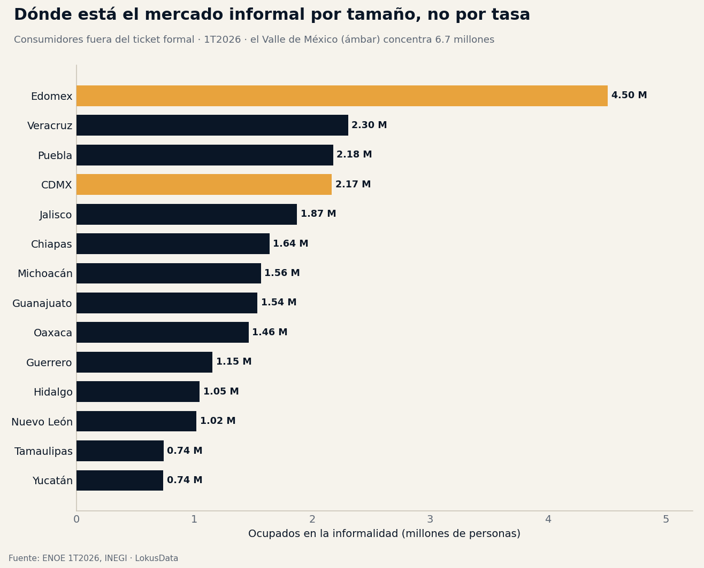
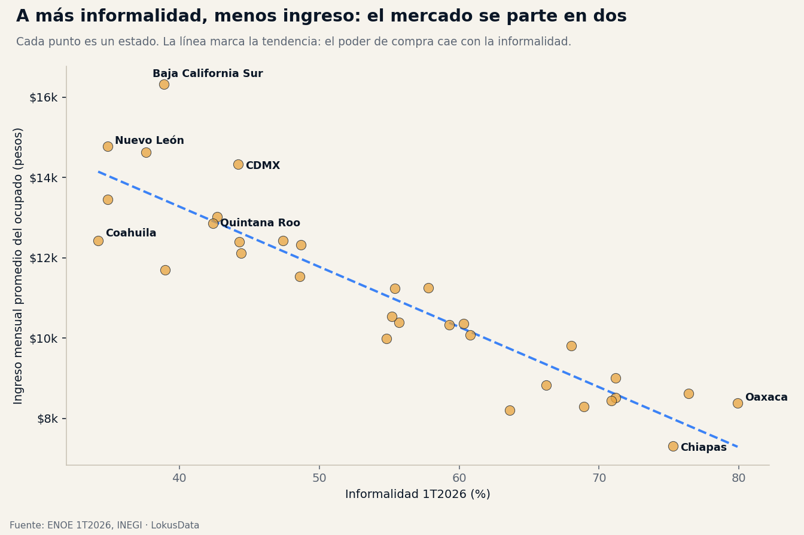

Los 32.6 millones que no pasan por el ticket: el mapa del mercado informal mexicano
32,625,872 mexicanos trabajan en la economía informal: el 54.8% de los ocupados. Es un mercado enorme que se mueve en efectivo y micronegocio — y el más grande no está donde la tasa es más alta, sino en el Valle de México. Entender su geografía es entender dónde y cómo se vende en México.

Un mercado de 32.6 millones que casi no deja rastro digital
La ENOE del 1er trimestre de 2026 (INEGI) cuenta 59,552,660 personas ocupadas en México, de las cuales 32,625,872 trabajan en la informalidad — el 54.8%. Para quien vende productos o servicios, esa cifra no es un problema social abstracto: es la estructura del mercado. Más de la mitad de los mexicanos que generan ingreso lo hacen en un circuito de efectivo, micronegocio y relación no salarial. Ese circuito casi no aparece en los datos de tarjetas, facturación o e-commerce — pero mueve una parte central del consumo del país.
El ingreso promedio del ocupado en México es de $11,043 al mes, y la mayor parte de ese gasto en los estados más informales se ejerce en el canal tradicional: la tiendita, el mercado, el tianguis, el vendedor por cuenta propia. Cualquier estrategia de distribución, cobro o expansión que asuma un consumidor bancarizado y con ticket está dejando fuera a la mitad del mercado.
La primera lectura de negocio
La informalidad no es solo ausencia de contrato: es un canal de consumo con reglas propias — efectivo, cercanía, confianza, tickets pequeños y frecuentes. El mercado más grande de México se atiende con ese canal, no contra él.
Fuente: ENOE 1er trimestre de 2026, INEGI.
Tamaño no es tasa: dónde está de verdad el mercado
El error más común es confundir la tasa de informalidad con el tamaño del mercado informal. Oaxaca tiene la tasa más alta del país (79.9%), pero su mercado informal —1.46 millones de personas— es de tamaño medio. El mercado informal más grande está en el Estado de México, con 4,504,998 ocupados informales, seguido de Veracruz (2.30 M), Puebla (2.18 M) y la Ciudad de México (2.17 M). Sumados, el Valle de México (Edomex + CDMX) concentra 6.7 millones de consumidores informales en un radio compacto y de alta densidad.
| Estado | Ocupados informales | Tasa informalidad | Ingreso mensual |
|---|---|---|---|
| Estado de México | 4,504,998 | 55.4% | $11,245 |
| Veracruz | 2,303,925 | 68.9% | $8,293 |
| Puebla | 2,176,821 | 70.9% | $8,445 |
| Ciudad de México | 2,167,105 | 44.2% | $14,336 |
| Jalisco | 1,870,614 | 48.6% | $11,540 |
| Oaxaca | 1,460,803 | 79.9% | $8,386 |
| Nuevo León | 1,017,698 | 34.9% | $14,786 |
Fuente: ENOE 1T2026, INEGI. Universo de 32 entidades; se muestran los mayores mercados informales por volumen. Filas sombreadas: el eje Valle de México.
La implicación estratégica es directa: para volumen, el mercado informal está en el centro poblado del país, no en el sur de altas tasas. Para quien distribuye productos de consumo, la densidad del Valle de México permite atender millones de puntos de venta informales con logística corta. Para quien vende servicios financieros o pagos digitales, ahí está la mayor masa de personas que hoy operan en efectivo — el mercado de conversión más grande.
El perfil del consumidor: a más informalidad, menos poder de compra
El mercado informal no es homogéneo, y el ingreso lo separa con claridad. Al cruzar informalidad e ingreso mensual del ocupado, la relación es inversa y consistente:

En los estados más informales el poder de compra es menor: Chiapas, con 75.3% de informalidad, es el de menor ingreso ($7,309 al mes); Oaxaca, $8,386. En el otro extremo, los mercados formales concentran el poder adquisitivo: Baja California Sur ($16,327), Nuevo León ($14,786), Baja California ($14,632) y la CDMX ($14,336). Traducido a decisión comercial: el sur informal es un mercado de volumen y ticket bajo —producto accesible, presentaciones pequeñas, rotación alta—, mientras el norte formal es un mercado de valor y ticket alto, con consumidor bancarizado y canal moderno.
Dos consumidores, dos estrategias
El mismo producto exige jugadas distintas según el mercado: en Oaxaca o Chiapas, precio de entrada y canal tradicional; en Nuevo León o BCS, propuesta de valor y canal formal. Segmentar por informalidad e ingreso es más útil que segmentar por tamaño de población.
El micronegocio es el canal, no el ruido
En los estados más informales, la estructura del trabajo revela quién es el intermediario natural. En Oaxaca, el 37.5% de los ocupados trabaja por cuenta propia y otro 10.5% no recibe pago —negocios familiares—. Casi la mitad de la economía ocupada opera como micronegocio independiente. Eso significa un tejido inmenso de puntos de venta pequeños, autónomos y de decisión local: la tiendita que decide qué marca surtir, el taller, el puesto de mercado. Para un fabricante o distribuidor, ese tejido es el canal — no una barrera hacia el consumidor, sino el consumidor y el punto de venta a la vez.
Donde la informalidad baja —Coahuila con 0.9% de trabajo no remunerado, Nuevo León con 1.1%— el canal se moderniza: cadenas, formato de autoservicio, consumidor con tarjeta. La geografía de la informalidad es, en realidad, un mapa del mix de canal tradicional contra canal moderno de cada estado.
Insights para la acción
- Para volumen, ve al Valle de México: Edomex y CDMX suman 6.7 millones de consumidores informales en un territorio denso y logísticamente corto. Es el mercado informal más grande y accesible del país.
- Segmenta por informalidad e ingreso, no por población: el sur (Oaxaca, Chiapas, Guerrero) pide precio de entrada, presentaciones pequeñas y canal tradicional; el norte (NL, Coahuila, Chihuahua) admite propuesta de valor, ticket alto y canal moderno.
- El micronegocio es el punto de venta: en los estados de alta informalidad, distribuir es surtir a millones de tienditas y puestos autónomos. La ventaja competitiva está en la cobertura y la relación, no en el retail formal.
- La conversión a digital es la mayor oportunidad: pagos, crédito y facturación dirigidos a quien hoy opera en efectivo tienen su mercado más grande donde más masa informal hay — el centro del país—, no donde la tasa es más alta.
Conclusión
La economía informal mexicana no es un margen: son 32.6 millones de personas, más de la mitad del mercado laboral, con un patrón geográfico claro. El mayor volumen está en el Valle de México; el poder de compra, en el norte formal; el canal, en el micronegocio del sur. Leer ese mapa —tasa, tamaño e ingreso a la vez— es la diferencia entre diseñar una estrategia de expansión para el México que aparece en los datos de tarjeta y diseñarla para el México real, donde la mayoría del consumo todavía se paga en efectivo.
Análisis basado en la Encuesta Nacional de Ocupación y Empleo (ENOE) del 1er trimestre de 2026, INEGI: tasa de informalidad, ocupados, ingreso promedio mensual del ocupado y estructura de la ocupación, a nivel nacional y estatal (la ENOE no reporta a nivel municipal). El cruce con empleo formal usa los Censos Económicos 2019 y 2024 del INEGI; son metodologías distintas y se observan por separado. Para dimensionar mercado, canal y poder de compra de cualquier territorio con datos oficiales integrados a la información de tu empresa, visita lokusdata.com